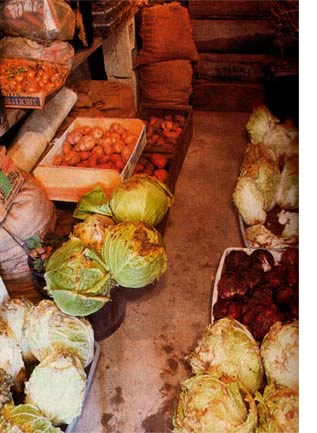
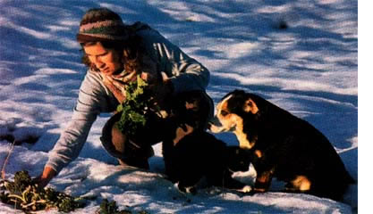

These are the months when spring arrives in the Northern Hemisphere, bursting brown buds into pink, blue and yellow glory, pushing asparagus into the mild air, coaxing seedling lettuces and spinach from the ground, and sending pea shoots scrambling up their netting to burst into sudden pod. Year after year, spring reliably moves us out of a darker season. Yet here at home, this spring is somehow different from all the others.
It is half a year since 911 became more than an emergency phone number, but a chillingly memorable date in U.S. history. And this spring is different, not because the world changed on Sept. 11, 2001, as has been frequently said, but because our relation to the world changed. Quite suddenly, we are part of a dangerous and unpredictable conglomeration of nations, one we had previously critiqued from behind the safety of two oceans. We live now, as someone recently wrote, in "a world vulnerable to disruption from a thousand sources."
Nowhere is our vulnerability more notable than where food is concerned. Although we could feed ourselves, we don't. The system that feeds us trades food all over the world, heedless of energy costs, heedless of the impact on local soils and ecosystems, heedless of the livelihoods of farmers who are going out of business everywhere. Much of our food now reaches us at the end of a long supply line, open to disruption at many points.
We are naive to believe we can be safe, eating at the end of this fragile global food chain. As poet-farmer Wendell Berry has written, "The time will soon come when we will not be able to remember the horrors of Sept. 11 without remembering also the unquestioning technological and economic optimism that ended on that day - I have long supported the idea that we should relocalize our food supply. Now, several months after September 11, moving toward such a goal no longer seems an eccentric option, but a vital step to making our lives more secure.
Now that events have forced us to think globally. those of us who know how food grows must demonstrate to our neighbors and our leaders that it is possible and delicious to eat locally, and that we can feed ourselves even though we don't. Teaching folks how will not be easy. Most are presently clueless about what's grown on nearby farms. or what's in season when.
At the moment it's spring, a surprisingly challenging season, as all self-provisioners know. Nongardening friends you hope to lead to local eating will expect you to put succulent fresh produce on the table. You sort of expect it yourself, but nature isn't ready, and it's a little late to dig parsnips. There are flowers, of course, but in most of our growing regions, trying to think fresh in April will test your ingenuity.
While planning for this column, which will be a regular department in Mother Earth News I enlisted a group of friends in different parts of the country to consider the seasons where they live, and to help me avoid being too mid-Atlantic in my thinking. Four of them, I confess, are former students who picked up some passion about local eating from me; one is a new friend who came to it all by herself. Their ideas will be a regular part of future columns.
They are Gail Feenstra, food systems analyst in the University of California Sustainable Agriculture Research and Education Program, Davis, California; Mary Anselmino, school garden consultant, St. Joseph, Michigan; Toni Liquori, assistant director of food and nutrition programs at a nongovernmental policy agency in New York City; Jennifer Wilkins, faculty member in the Division of Nutritional Sciences at Cornell University, Ithaca, New York; and covering the South, both west and east, Barbara Kingsolver, who grows a winter garden in Tucson and a summer one in Virginia. Her impassioned, popular writing about humans and other natural things makes further introduction unnecessary.
When we got together by phone to discuss April, only Gail in California had more than storage crops to actually fill up the plate. For those in mild climates like Gail's, spring means lots of greens, tame and otherwise, fall-planted spinach and various other hardy leaves. Wild ones in the mountain South include "Creasy Greens," "poke salad" and knotweed (Though only the shoots of the latter two are safe to eat!) Later in the month there are asparagus shoots (roadside and other) and, once May arrives, peas. Gail in California's Central Valley says one of her favorite early dishes is a spring risoto with asparagus and sugar snaps (Fields of Greens: New Vegetarian Recipes from the Celebrated Greens Restaurant, by Annie Somerville). Gail adds a sliced radish or two to the recipe.
Greens alone don't do it for me, and although I could live on peas, mine don't really begin until June. So I find myself, like many other self-provisioning gardeners, depending a lot this season on what I've stored in the freezer, cold cellar and back room, where I keep the sweet potatoes and butternut squash. The latter are important now because the white potatoes are beginning to go. Before they do, below is a simple recipe adapted from Deborah Madison's The Savory Way that will help you and those you're feeding feel surprisingly spring-like at your April table.
While the pickings may be a bit thin this time of year, a few restrictions on choice still seem preferable to the alternative. A recent newspaper article about upgrading our security quoted an "expert" who said we were going to have to be on guard at "all the places our nation touches the rest of the world." Has he looked at a supermarket lately? Has he looked at a map? I don't really want to live in a fortress America-even if one were feasible I surely don't want my food to come from outside one.
Joan Gussow's book, This Organic Life: Confessions of a Suburban Homesteader, is available on MOTHER's Bookshelf, Page 120.
|
 Photo: DAVID CAVAGNARO A well-stocked root cellar helps ease the transition from winter to spring. |
 Photo: DAVID CAVAGNARO Ultra cold-hardy kale makes great winter soups and is loaded with nutrition. |
|